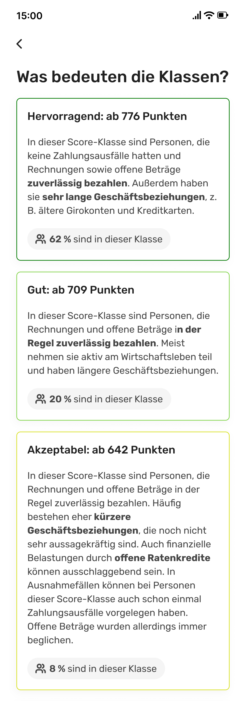

A number that meant nothing
When I joined this project, the brief was: visualise a user's credit score over time. Show them how it's moved. Let them see the history.
The problem was that nobody had asked whether the number itself meant anything to people first.
I ran 8 user interviews in the first two weeks. What I heard: people knew their score went up or down. They had no idea why. They didn't know what a 'good' score looked like. They were anxious every time they opened the feature — not because the data was bad, but because they didn't know how to read it.
Showing them more data wasn't going to fix that. It was going to make it worse.
Two ways that looked right until they didn't
My first direction was comprehensive — a full dashboard showing score history, contributing factors, comparisons, recommendations. It tested well with me and the team. It tested terribly with users. They opened it, felt overwhelmed, and closed it. One participant said: 'This looks like it's for someone who already understands this stuff. That's not me.' We killed it.
Second direction: a clean timeline — score on the Y axis, time on the X axis, minimal labels. Intuitive, right? Except the score doesn't change often enough to make a satisfying chart. Six months of data looked like a flat line with two blips. Users read it as: nothing is happening, this isn't useful. We killed that too.
"This looks like it's for someone who already understands this stuff. That's not me."
Score first, story on demand
The insight that unlocked everything came from a user in the third round of testing. She said: 'I just want to know if I'm doing okay. Then I want to understand why.'
That was the design. Score first — clear, contextualised, 'you're doing okay.' Then the history as a story you could explore if you wanted to understand more. Not the other way around.
We added contextual benchmarks ('your score is higher than 68% of users your age'), plain-language explanations of what moved the score, and a timeline that only showed meaningful changes — not every data point.

What happened
The metric I care most about isn't the 60K. It's the 7-day return rate. People came back. For a feature about credit data — something most people find stressful — that felt like the right signal. It meant we'd made it feel useful, not anxious-making.
What I'd do differently
I'd have run the first round of research sooner and used it to challenge the brief before I started exploring. I spent time on Direction A that I shouldn't have — not because it was a bad direction, but because we hadn't validated whether the brief itself was right. The user who said 'this looks like it's for someone who already understands this' would have said that in week one if I'd asked her in week one.